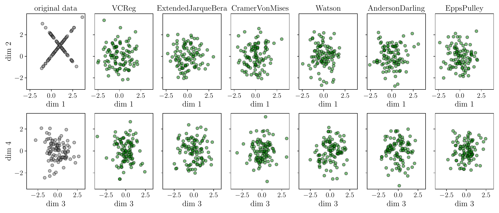

A field guide
The JEPA World-Model Lineage: From LeCun's 2022 Vision to LeWorldModel and SkyJEPA
Citation graphs get flattened into tidy stories all the time — "X builds on Y builds on Z" — and most of the time that's roughly true. This one isn't, and the exact place it stops being a straight line is the most interesting part. Four papers, three years, and one shared piece of math: a 2022 position paper's proposal for how an intelligent agent should model the world, a 2025 theorem about the single best distribution for an embedding to have, and two 2026 papers that both build a working world model on top of that theorem — independently of each other. This is the toolkit and the real graph, node by node, with a quiz at each stop.
Start with the question this whole lineage answers: if you want a model to predict the future, should it predict the future in pixels, or in some compressed internal code? Predicting pixels means wasting capacity on irrelevant detail — the exact texture of bark on a tree you're driving past — and it's expensive. Predicting in a compressed code is cheap and throws away the irrelevant detail for free. The catch is that it's also trivially gameable: a network that maps every input to the same constant vector "predicts the future" perfectly, because there's nothing left to get wrong. This failure has a name — representation collapse — and for a decade the fix was a pile of heuristics: negative examples, stop-gradients, momentum-averaged teacher networks, careful learning-rate schedules for each.
In 2025, Randall Balestriero and Yann LeCun proved something specific about what a non-collapsed, maximally useful embedding distribution should look like — and it's not an arbitrary target. Two papers in 2026, working on completely different problems (general video/robot world models, and real-time quadrotor control), both reached for that exact result to solve their own collapse problem. Neither cites the other as an influence. That's the graph this piece actually traces.
1. Node 1 — LeCun's world model (2022)
"A Path Towards Autonomous Machine Intelligence" (LeCun, 2022, OpenReview) is a position paper, not a system — it proposes an architecture for an autonomous agent built from six differentiable, mostly-trainable modules, without shipping a working implementation of most of them.
The World Model is the module every downstream paper in this piece cares about: given the current estimated state and a hypothesized action, predict the resulting future state — not as pixels, but as a latent representation. LeCun's argument for why this should be trained with a Joint-Embedding Predictive Architecture (JEPA) rather than a generative model is exactly the collapse trade-off from the hook: a generative decoder is forced to reconstruct every pixel, wasting capacity and gradient signal on unpredictable, irrelevant detail, while a JEPA is free to represent only what's predictable — provided you can stop it from cheating by collapsing. The paper names the problem precisely but doesn't solve it: it surveys contrastive and non-contrastive heuristics without landing on a principled fix. That's exactly the gap LeJEPA closes three years later.
2. Node 2 — LeJEPA: the isotropic Gaussian theory (2025)
Balestriero & LeCun's "LeJEPA: Provable and scalable self-supervised learning without the heuristics" (arXiv:2511.08544) asks a sharper version of LeCun 2022's open question: which embedding distribution should a JEPA converge to, if you want it to be useful for any downstream task, not just the one you happened to train it for?
The theory: why isotropic Gaussian, specifically
The paper answers this with two complementary arguments, both landing on the same target. For linear probing (ridge regression on frozen embeddings), comparing an anisotropic embedding matrix against an isotropic one with identical total energy: whenever the eigenvalues of the anisotropic one are unequal, there exists some downstream task for which it gives a higher-bias estimate, and at zero regularization its estimator variance is provably higher too. For nonlinear probing (k-NN and kernel regression), a theorem bounds the integrated squared bias of both estimators and proves that under a fixed total-variance constraint, the isotropic Gaussian is the unique minimizer. Put together: an isotropic Gaussian embedding is the choice that minimizes worst-case risk across the whole space of possible downstream probes — not a heuristic, a proof.
Turning that target into a trainable loss needs one more idea: the Hyperspherical Cramér–Wold theorem, which says two distributions in $\R^d$ are identical if and only if every 1-D projection of them is identical. That collapses an intractable multivariate distribution-matching problem into something you can check (and optimize) one direction at a time.
SIGReg: turning the theory into a loss
The paper tests three families of 1-D distributional tests before picking one. Moment-matching (Jarque–Bera style) fails a theorem showing finitely many matched moments never implies full distributional equality. CDF-based tests (Cramér–von Mises, Anderson–Darling) need $O(N\log N)$ sorting and aren't cleanly differentiable. The one that survives is the Epps–Pulley characteristic-function test:
$$ \mathrm{SIGReg}_T(\sA, \{f_\theta(x_n)\}) \triangleq \frac{1}{|\sA|}\sum_{\vu\in\sA} T\big(\{\vu^\top f_\theta(x_n)\}_{n=1}^N\big), \qquad T = \int w(t)\,\big|\hat\phi(t)-\phi_0(t)\big|^2\,dt $$
where $\hat\phi$ is the empirical characteristic function of the embeddings projected onto direction $\vu$, $\phi_0$ is the standard normal's characteristic function, and $\sA$ is a set of randomly sampled unit directions (resampled every step). A companion theorem proves this statistic has bounded gradient and curvature — it can't blow up during training — and the whole computation is $O(N)$ in batch size: no sorting, just an average of complex exponentials that's trivially summed across GPUs. Because it's a genuine statistical test for the full target distribution, not a proxy like matching variance and covariance (which is what VICReg does, and which SIGReg reduces to as a special case if you swap in a weaker test), collapse is excluded by the test itself — no negative pairs, stop-gradient, or momentum encoder required.
The widget below runs the actual SIGReg gradient — the same equation above, not a stand-in — on a small 2D point cloud, live in your browser.
The same gradient descent as the widget above, at 160 steps instead of the widget's manual increments — watch the loss fall and the point cloud lose its one preferred direction.

Full training loss, with a single hyperparameter $\lambda$ (default $0.05$) trading off prediction against the isotropic-Gaussian pressure:
$$ \gL_{\rm LeJEPA} = \frac{\lambda}{V}\sum_{v=1}^V \mathrm{SIGReg}\big(\{\vz_{n,v}\}_{n=1}^B\big) + \frac{1-\lambda}{B}\sum_{n=1}^B \big\|\mu_n - \vz_{n,v'}\big\|_2^2 $$
Validated across 60+ architectures and 10+ datasets, stable under sweeps of batch size, embedding dimension, and register-token count; a ViT-H/14 reaches 79% linear-probe accuracy on ImageNet-1k, and a LeJEPA ViT-L trained for a third the epochs of I-JEPA's ViT-H beats it on average transfer accuracy. The abstract's own framing: the entire method fits in about 50 lines of PyTorch.
3. Node 3 — LeWorldModel (2026)
"LeWorldModel: Stable End-to-End Joint-Embedding Predictive Architecture from Pixels" (Maes, Le Lidec, Scieur, LeCun, Balestriero — arXiv:2603.19312) is the first paper in this lineage to actually build a world model in LeCun 2022's sense: a small ViT-Tiny encoder (~5M params) and a 6-layer transformer predictor (~10M params) trained end-to-end from raw pixels, with actions injected via zero-initialized Adaptive LayerNorm at every predictor layer.
The training objective is exactly two terms — a next-embedding prediction loss, and SIGReg, imported directly: the method section's own words are that they adopt SIGReg "due to its simplicity, scalability, and stability." Nothing about SIGReg is re-derived; it's used exactly as LeJEPA specifies.
$$ \gL_{\rm LeWM} = \big\|\pred(\vz_t,\va_t) - \vz_{t+1}\big\|_2^2 + \lambda\cdot\mathrm{SIGReg}(\mZ) $$
The payoff of importing a provably-correct regularizer instead of hand-tuning heuristics: the paper's own comparison is against PLDM, "the only existing end-to-end alternative," whose loss has six separately-tuned coefficients (variance, covariance, temporal-similarity, temporal-variance, temporal-covariance, and an inverse-dynamics term) requiring roughly $O(n^6)$ grid search. LeWorldModel needs one — $\lambda$ — searchable by simple bisection, $O(\log n)$. The ablation below is the real curve from their Push-T experiments.
Two results are worth dwelling on. First, physical structure emerges without being asked for: linear probes recover object/robot position from single-frame latents competitively with DINOv2-pretrained DINO-WM despite roughly two orders of magnitude less pretraining data, and — unregularized, purely emergent — the cosine similarity between consecutive latent-velocity vectors increases over training, meaning the model's internal notion of "how things move" becomes smoother than its raw training signal required. Second, a violation-of-expectation test borrowed from developmental psychology: perturb a rollout by teleporting an object to a random location mid-trajectory, and the model's prediction error spikes significantly ($p<0.01$ across three environments) — while a mere color change produces a much weaker, non-significant response. The model is more surprised by physically impossible events than by visually unusual ones, exactly the asymmetry a real physical world model should have.
Headline control numbers: LeWorldModel beats PLDM by 18 percentage points of success rate on Push-T, and even edges out DINO-WM there despite DINO-WM having access to proprioception that LeWorldModel doesn't. It plans using roughly 200× fewer tokens per observation than DINO-WM, translating to up to 48× faster planning than foundation-model-scale world models — under a second per plan.
4. Node 4 — SkyJEPA (2026)
"SkyJEPA: Learning Long-Horizon World Models for Zero-Shot Sim-to-Real Control of Quadrotors" (Rao, Zhang, Balestriero, LeCun, Loianno — arXiv:2606.23444) takes the same JEPA-plus-SIGReg recipe into a domain LeWorldModel never touches: a physical robot, controlled in real time, on embedded hardware.
The state is the quadrotor's full rigid-body state — position, velocity, the three columns of its rotation matrix, and body-frame angular velocity (18 numbers) — and the action is four individual motor thrusts. Two small temporal convolutional encoders (state history, action history) feed a single-layer GRU predictor — the entire latent dynamics model is about 9,000 parameters, tiny even next to LeWorldModel. The training loss is again prediction-plus-SIGReg, with $\lambda_{\rm sig}=0.02$.
The physics-inspired prober
SkyJEPA's real contribution is what happens after the JEPA world model: a second, separately-trained stage called the physics-inspired prober. With the encoders and predictor completely frozen, the prober doesn't try to decode physical state directly from the latent — it predicts only two small residual terms (a translational-acceleration correction and a matrix mapping motor forces to a torque correction) and injects them into a known Newton–Euler rigid-body integrator, including the $SO(3)$ exponential map for attitude update. The frozen JEPA latent only ever has to supply the part of the dynamics that idealized physics gets wrong — drag, motor lag, manufacturing variation — not reinvent Newton's laws from scratch.
The ablation that isolates each piece: holding the prober fixed, switching from reconstruction to JEPA training cuts position error from 6.82m to 5.56m — a real but modest gain. Holding the JEPA objective fixed and switching from a generic MLP prober to the physics-inspired one cuts it from 5.56m to 1.43m, an 84% reduction, with attitude error falling 91%. The structured kinematic integrator, not the anti-collapse objective, is doing most of the work — trained on 20,000 trajectories across 500 domain-randomized simulated quadrotors (mass, drag, and motor parameters all varied), it transfers zero-shot to a real 1.3kg quadrotor outdoors, cutting position RMSE 26–38% and attitude error 33–54% versus a plain physics-regularized baseline, across five held-out flight trajectories, with no fine-tuning on real data at all.
5. The real family tree
Click through the actual structure. The lesson isn't really about quadrotors or PyTorch line counts — it's that "traceable link" and "linear chain" aren't the same thing. Two papers sharing an author, a publication window, and a research area can still be technically independent; the only way to know is to check what each one's own method section actually cites its mechanism to, not what the abstracts imply.
6. Why the shared theory matters
The reason SIGReg was reusable at all — by two completely different teams, for two completely different robots — is that LeJEPA's theorem is stated about the embedding distribution in the abstract, with no reference to what's being embedded. "Match an isotropic Gaussian" doesn't know or care whether the encoder reads video frames or ten motor-force histories. That's what makes it theory rather than a trick tuned to one dataset: the moment you can state a training objective's correctness independently of the domain, it becomes portable in exactly the way a domain-specific heuristic (a particular augmentation, a particular EMA schedule) never is.
It's also why the LeWorldModel/SkyJEPA split is the right kind of divergence, not a redundancy. LeWorldModel spends its effort on the world-model half of the stack — decent-quality frozen representations of physical scenes, useful for many downstream planners. SkyJEPA spends almost none of its effort there (a 9K-parameter world model is tiny) and all of it on the prober — the part that turns a generically-useful latent into a number a flight controller can act on within its 10-millisecond control budget. Both are legitimate, different answers to "given a collapse-proof world model, what do you build around it," and neither needed to wait for the other.
7. What it means
Zoom out and this is a clean illustration of how a research program actually accumulates, as opposed to how it gets summarized after the fact. LeCun's 2022 paper is a target with an acknowledged gap. LeJEPA is a 2025 theorem that closes exactly that gap, in a form general enough to be domain-agnostic. LeWorldModel and SkyJEPA are two 2026 groups independently recognizing "this is the fix for the collapse problem in our own world model" and importing it wholesale, rather than re-deriving their own anti-collapse heuristic from scratch — which is the mark of a genuinely reusable theoretical result, not a coincidence of shared authorship.
Open questions
- Does SIGReg's isotropic-Gaussian target hold up in low-intrinsic-dimensionality settings? LeWorldModel's own results show it underperforming simpler baselines on their easiest environment (TwoRoom), attributed to the Gaussian prior being a poor fit when the true underlying state space is very low-dimensional.
- Will the next application in this family cite LeWorldModel or SkyJEPA — or go straight back to LeJEPA again? Given the pattern so far, betting on the latter is reasonable.
- Does the prober idea generalize past quadrotors? SkyJEPA's real lesson — a tiny frozen latent plus a physically-structured probe beats a bigger latent doing everything — is a template, not a quadrotor-specific trick.
The bottom line
"Traceable link" is doing real work in this piece's own title: it doesn't mean straight line. LeJEPA is the hub, not the second link in a chain — and the honest version of this family tree, the one a citation graph would actually draw, is one strong theoretical result with two independent, unrelated applications standing on it. That's a better outcome for the theory than a strict sequential dependency would have been: it means the isotropic-Gaussian result was correct and general enough to be worth reaching for twice, by two teams who didn't need each other's permission to use it.